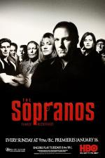
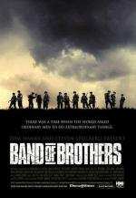

ITBFilms
Peliculas
A primera comunión
En la película A primera comunión , se sigue a una niña de 9 años Pelicula mayor 16 años.
Avatar 2
Avatar 2 es una película clasificada para mayores de 12 años que explora Aquaman
Aquaman and the Lost Kingdom es una secuela clasificada para mayores12 años que sigue a Aquaman enfrentando nuevos desafíos para proteger Morbius
Morbius es una película para mayores de 12 años que sigue a Michael Morbius, Alien Romulos
Alien Romulus es una película de ciencia ficción que sigue a un grupo de sobrevivientes Vidro
Vidiro es una película clasificada para mayores de 12 años que concluye la trilogía deUnbreakable y Split , centrándose en la confrontación entre los personajes de
Actores
Johnny Depp
John Christopher Depp II es un actor, productor de cine y
Denzel Washington
Denzel Hayes Washington, Jr. es un actor, productor y
Harrison Ford
Harrison Ford es un actor, productor de cine, y actor de voz
Will Smith
Willard Carroll Smith II, más conocido como Will Smith, es
Brad Pitt
William Bradley Pitt conocido como Brad Pitt, es un actor,
Javier Bardem
Javier Ángel Encinas Bardem, conocido artísticamente
Dwayne Johnson
Dwayne Douglas Johnson, conocido como The Rock, o La
Morgan Freeman
Morgan Freeman es un actor y documentalista
----------------------------------------------------------------------------------------------------------------------------------------------------------------------------------------------------------
Fertivales
Festivales de Cine Más Importantes
Festival de Cannes
Festival de Berlín
Festival de Venecia
Festival de Sundance
Festival de Toronto
Premios Más Importantes
Mejor Película Avatar: The Way of Water
Mejor Actor Joaquin Phoenix (Morbius)
Mejor Actriz Jessica Chastain (Vidrio)
Mejor Director James Cameron (Avatar: The Way of Water)
Mejor Guión M. Night Shyamalan (Vidrio)
Series
The Wire (Bajo escucha)
Serie de televisión (2002-2008). 5 temporadas. 60 episodios. 8.8
Breaking Bad
Serie de TV (2008-2013). 5 temporadas. 62 episodios. 8.8
Los Simpson
Serie de TV (1989-Actualidad). 34 temporadas. Narra la8.6
Juego de Tronos
Serie de TV (2011-2019). 8 temporadas. 73 episodios. 8.5
Los Soprano

Serie de TV (1999-2007). 6 temporadas. 86 episodios.8.5
Hermanos de sangre

Miniserie de TV. 10 episodios. Narra la historia de la8.5
Lo Más Visto: Ranking de las 10 Películas/Series Más Vistas
Avatar: The Way of Water
Breaking Bad
Juego de Tronos
Los Soprano
Los Simpson
Hermanos de sangre
A primera comunión
Morbius
Vidrio
Alien: Romulus
© 2024 Mi Sitio Web. Todos los derechos reservados.
Dirección: Calle Ejemplo 123, Ciudad, País
itbflix.info@itbflix.com
Síguenos en las redes sociales:

.jpg)

.jpg)